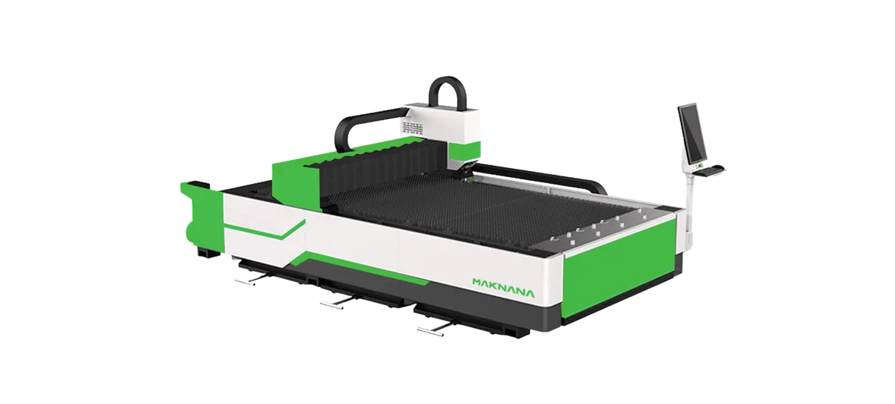
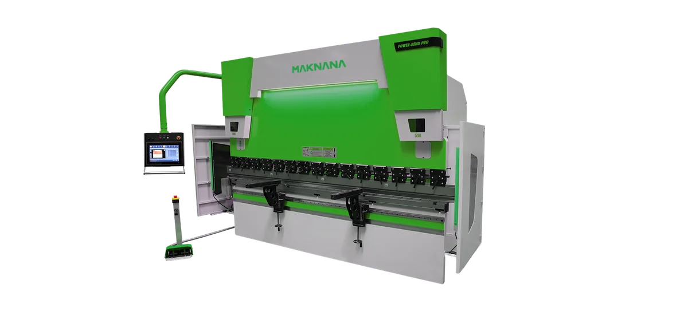
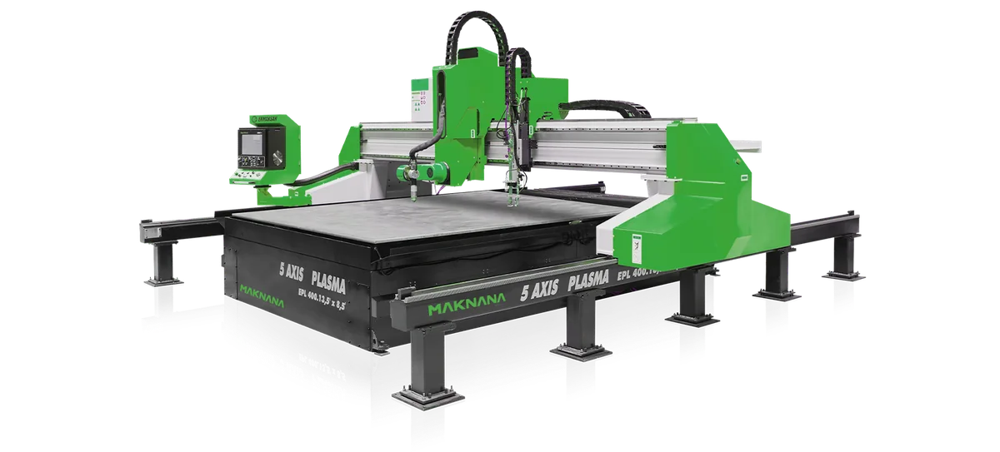

Steel
Cutting, bending, forming, welding, machining and finishing of sheet, plate, sections and coil
- Press brakes from 40 t to 2,000 t, including tandem and servo-electric modelsProduct Catalogue 2026, page 7
- Fiber laser cutters: 1–12 kW source power on flat-bed models, up to 30 kW on the enclosed sheet-and-tube model; repeatability ±0.02 mm (maker's figure)Product Catalogue 2026, page 34
- Panel benders in three sizes, up to 2,500 mm bending width; fastest single bend 0.2 sProduct Catalogue 2026, page 17
- Coil lines for 0.3–25 mm material up to 2,000 mm wide; each line covers a narrower bandProduct Catalogue 2026, page 65
- Turnkey powder coating lines with robot or booth coatingProduct Catalogue 2026, page 67
Machine groups
Press brakesShearsPunchingPlasma cuttingLaser cuttingLaser welding (handheld)IronworkersRolling and bendingSawingPressesMachiningCoil processingSurface finishing